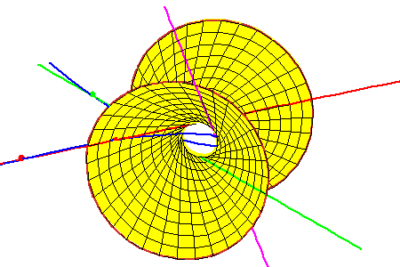

Hyperboloid Through the Three Tangent Lines
Hyperboloid Through the Three Tangent Lines
| The lines meeting these three lines form a ruling of a hyperboloid of one sheet that contains the three secant lines. Each intersection of this hyperboloid with a fourth line gives a line meeting all four. In this geometric context, the Secant conjecture is | ||
|  |
equivalent to the following geometric statement:
|
|